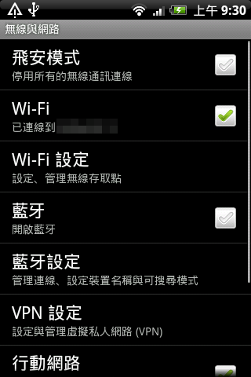
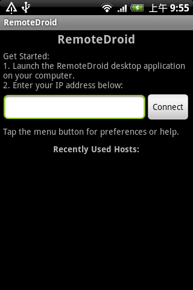
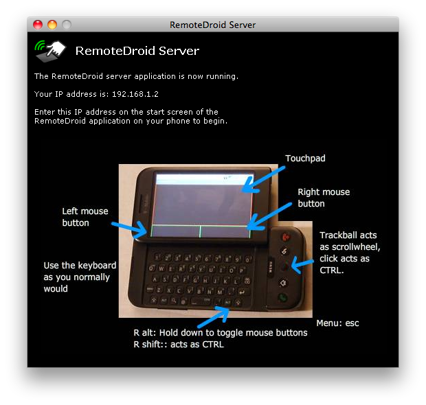
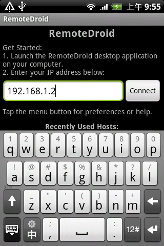
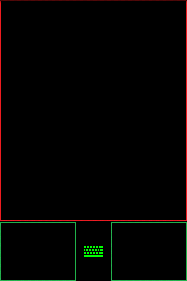
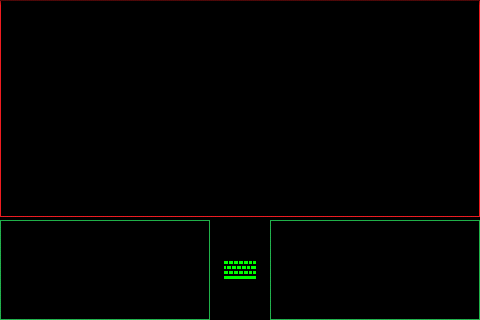
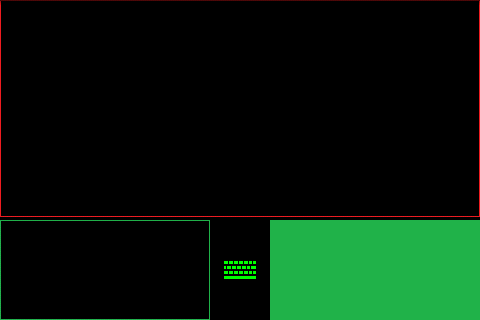
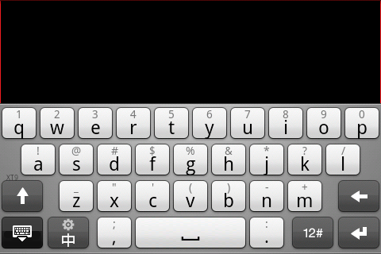
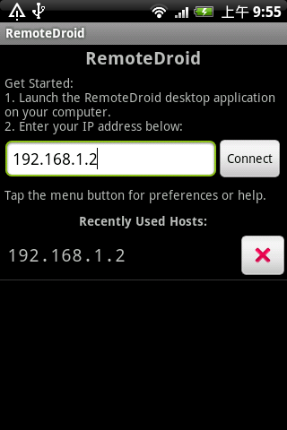

感謝您對「自由軟體鑄造場」的支持與愛護，十多年來「自由軟體鑄造場」受中央研究院支持，並在資訊科學研究所以及資訊科技創新研究中心執行，現已完成階段性的任務。 本網站預計持續維運至 2021年底，網站內容基本上不會再更動。
也紀念我們永遠的朋友 李士傑先生（Shih-Chieh Ilya Li）。
也紀念我們永遠的朋友 李士傑先生（Shih-Chieh Ilya Li）。
源碼秘技  用 Android 手機充當電腦的無線鍵盤及滑鼠
用 Android 手機充當電腦的無線鍵盤及滑鼠
用 Android 手機充當電腦的無線鍵盤及滑鼠
建立日期 2010-12-24 02:34 最近更新在 2010-12-24 03:38
各位讀者也許不太明白：「我的電腦已經配備鍵盤及滑鼠，為什麼還要用智慧型手機來充當無線鍵盤及滑鼠呢？」筆者相信，RemoteDroid 這個軟體的出現，最大的受惠者其實是筆記型電腦的使用者。有用過這一類電腦的使用者都會同意它預設的觸控板位於鍵盤的下方，實在太不順手了，因此他們往往會使用 USB 滑鼠連接筆記型電腦，讓操作電腦更為方便。如果這一類使用者同時也有一台 Android 智慧型手機，則大可下載及安裝 RemoteDroid，將手機變成「無線觸控板」並放在筆記型電腦的右邊，這樣使用者便不用再攜帶另一支 USB 滑鼠了。再者，近期推出的 Android 智慧型手機，不少都強調大螢幕，這種手機就更適合充當電腦的觸控板了。除了可模擬電腦的觸控板外，RemoteDroid 亦可同時模擬電腦的鍵盤，這樣使用者便可透過手機的實體鍵盤或虛擬鍵盤，在電腦上輸入文字。不過這個功能方便與否，要看使用者的手機是否設有實體鍵盤。筆者始終認為透過智慧型手機螢幕上的虛擬鍵盤輸入文字，總是比不上實體鍵盤來得方便。
軟體名稱：RemoteDroid
最新版本：1.4
軟體授權：GNU General Public License (GPLv3)
系統支援：Android
官方網站：https://code.google.com/p/remotedroid/
各位使用者可透過 RemoteDroid 的官方網站免費下載這個軟體。這個軟體分為兩部份：安裝於 Android 手機的 APK 檔案，以及安裝於電腦的伺服器軟體。前者是一個 APK 檔案，以「.apk」為副檔名，透過 Android 手機中的檔案總管開啟 APK 檔案，便可選擇將軟體安裝至 Android 手機。不過，事前使用者要確定 Android 手機的【設定】中的【應用程式】介面，當中「未知的來源」的核取方塊已勾選。後者則是一個名為「RemoteDroidServer」的 ZIP 壓縮檔，將這個 ZIP 檔案打開後，便會發現有一個檔名「RemoteDroidServer.jar」的檔案，那是一個 Java 程式，理論上可於任何支援 Java 的作業系統上執行，包括 Windows、Mac OS X 及 GNU/Linux 系統。以下筆者以 Mac 電腦作示範。
在正式使用 RemoteDroid 時，首先先啟動智慧型手機的 Wi-Fi 功能。要使用這個軟體，智慧型手機與電腦須連接同一個 Wi-Fi 網絡。

▲圖1
然後，便可執行安裝於手機裡的 RemoteDroid 軟體。
▲圖2
執行 RemoteDroid 軟體後，會見到如下圖的畫面。

▲圖3
這時候，使用者便可按照上述畫面的指示，執行儲存於電腦裡的「RemoteDroidServer.jar」程式。如無意外，電腦會出現這個視窗。

▲圖4
視窗中會出現一個 IP 位址，就在「Your IP address is:」字句之後。此時使用者便可在手機中的 RemoteDroid 畫面中「Enter your IP address below:」下的欄位，輸入電腦顯示的 IP 位址。

▲圖5
再點選〔Connect〕。如無意外，手機會顯示如圖的畫面。

▲圖6
這就是 RemoteDroid 模擬電腦觸控板的操作介面了。為了方便操作，使用者更可將手機以橫向的方式擺放，令 RemoteDroid 的操作介面切換為橫向式。

▲圖7
RemoteDroid 操作介面下方的左、右長方格分別模擬電腦的滑鼠左鍵及右鍵。在手機螢幕上點擊這兩個長方格，便等同於在電腦滑鼠上按左鍵及右鍵。

▲圖8

▲圖9
此外，智慧型手機的導航鍵亦可充當電腦的方向鍵，手機導航鍵可模擬為電腦的〔CTRL〕鍵，而手機的〔MENU〕鍵則可模擬為電腦的〔ESC〕鍵。
如果使用者所用的智慧型手機不設實體鍵盤，RemoteDroid 操作介面下方中間會出現〔鍵盤〕圖示，點選這個圖示則可啟動手機的虛擬鍵盤，之後使用者透過虛擬鍵盤所輸入的文字，都會在電腦上重現。如果使用者所用的智慧型手機設有實體鍵盤，直接透過實體鍵盤打字便可。

▲圖10
最後，按下手機的〔返回〕鍵便會結束 RemoteDroid 的模擬模式，返回主畫面。下次使用者再次使用 RemoteDroid 的時候，便會發現主畫面中的「Recently Used Hosts」會列出曾經連接過的位址。

▲圖11
您也許有興趣閱讀以下文章:
- 利用 Android 手機記錄行程及途經點 - 2010-10-01
- 利用 Android 手機記錄 GPS 行程 - 2010-08-23
專欄總覽


自由軟體鑄造場 製作 最佳瀏覽狀態：IE7或Firefox2.0以上 (建議使用Firefox) ‧ 解析度1024*768
E-Mail：contact@openfoundry.org Address：台北市南港區研究院路2段128號 中央研究院資訊科學研究所 . 隱私權條款. 使用條款
E-Mail：contact@openfoundry.org Address：台北市南港區研究院路2段128號 中央研究院資訊科學研究所 . 隱私權條款. 使用條款
評論